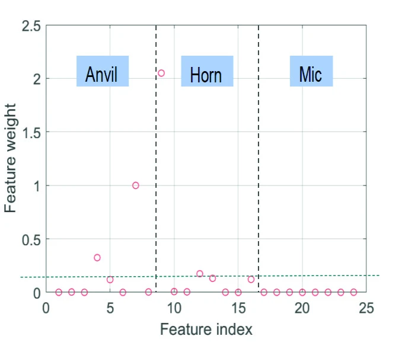
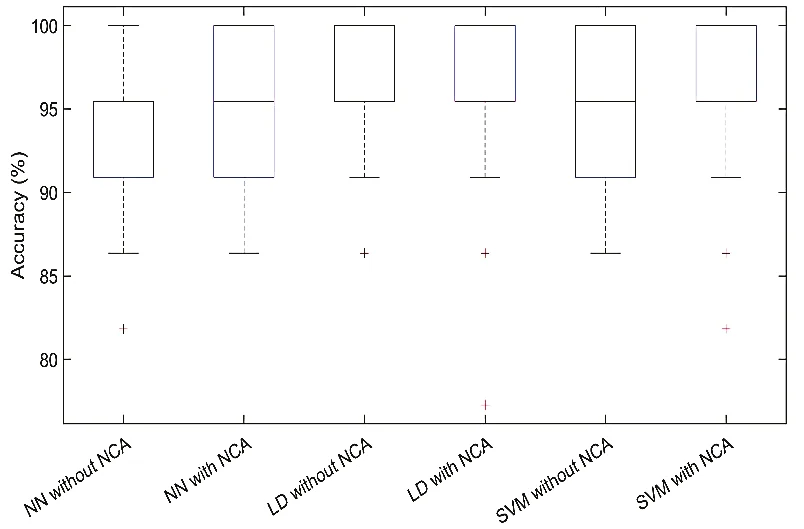
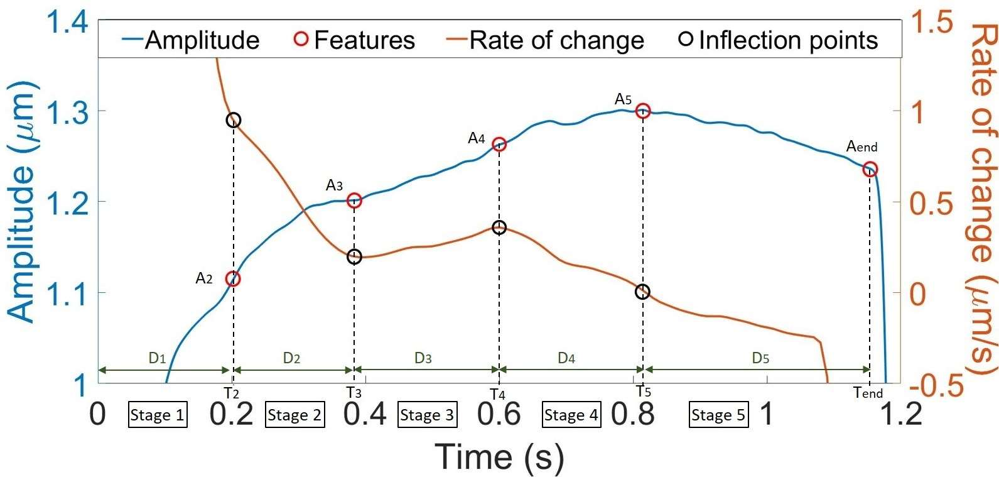
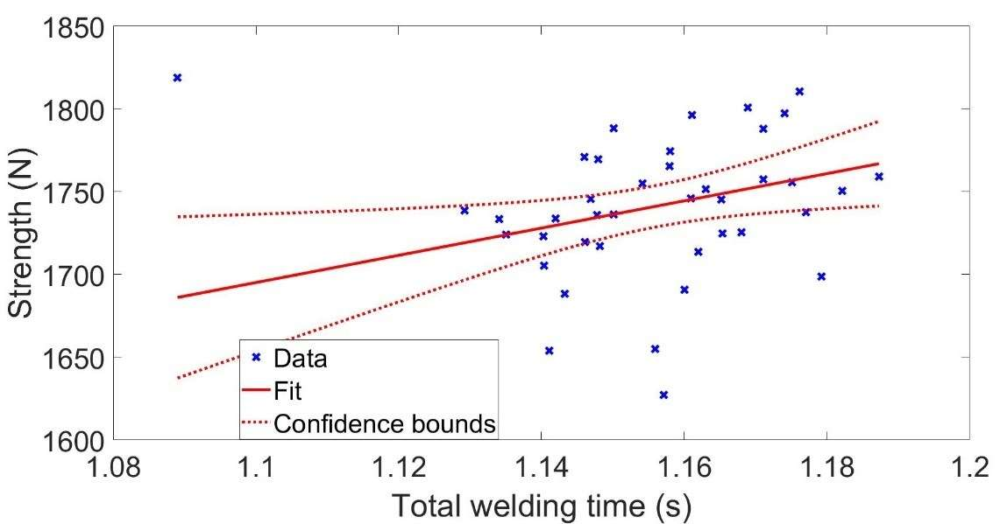

One experimental foundation. Two paths from signal to insight.
Ultrasonic metal welding joins metal sheets with high-frequency mechanical vibration. Testing the finished joint for strength is often destructive. We wanted to investigate whether non-contact measurements taken during welding could say something useful about the resulting joint.
120 original welds, with three additional measurements for the ML paper.
The PhD analysis used the original 120 copper welds. The classification paper used those same 120 welds plus three additional measurements, giving 123 observations. The papers did not start from unrelated datasets; they applied different signal-processing and modeling approaches to a shared experimental foundation.
What quality state is the weld in?
Wavelet packet decomposition → energy in frequency bands → neighborhood component analysis → neural network, SVM and LDA classifiers.
Explore machine learning →How strong is the weld?
Smoothed vibration envelopes → process-stage timing and amplitude features → statistical testing → robust linear regression.
Explore statistical modeling →Training models to recognize weld quality.
In the classification study, each of the 123 observations had a quality class based on the welding process and mechanical-test reference. The challenge was not merely fitting a classifier—it was constructing informative inputs from high-frequency sensor signals.
“Basic weld+” was not a class of experimentally observed overwelds; that distinction matters when describing the labels and what the model learned.
Build signal features
Measured horn, anvil and microphone signals were processed with level-3 wavelet packet decomposition. Normalized energy across eight frequency bands per sensor yielded 24 candidate features.
Reduce irrelevant inputs
Neighborhood component analysis and process knowledge guided the selection of four discriminative features. No microphone feature was retained.
Compare model families
Compared a backpropagation neural network, support vector machine and linear discriminant analysis using 100 random 85/15 train/test allocations, with cross-validation and hyperparameter optimization.

Expand chart ↗Support vector machines and linear discriminant analysis performed especially well on held-out data. Feature reduction improved SVM results, barely changed LDA and weakened the neural network's test result. The value of feature selection depended on the model.

Expand chart ↗These results are evidence of supervised model development and evaluation on a controlled experimental dataset. They are not proof of performance across different welding machines, materials or production environments.
Going beyond categories to estimate weld strength.
For the doctoral work, I followed a different processing route: filtering the vibration measurements, extracting smoothed amplitude envelopes and computing features tied to changes between physical welding stages. On a subset of 40 welds, the target became continuous measured strength rather than a quality class.
Extract physically interpretable indicators from horn and anvil vibration envelopes.
Use Spearman correlation, p-values, bootstrapped 95% confidence intervals and partial correlations.
Apply bisquare-reweighted robust linear regression, feature selection and 3,000 bootstrap resamples.

Expand chart ↗Did the engineered features outperform a simple baseline?
A linear model using only total welding time.
Adjusted R² = 0.36 after accounting for complexity.
Interpretation: these are in-sample goodness-of-fit statistics, not independently validated predictive accuracy. The raw R² values are comparable; the adjusted R² is reported separately.

Expand chart ↗Methods such as rank correlations, bootstrap intervals, partial correlations and robust fitting were chosen because the assumptions behind ordinary least-squares regression did not always hold for the measured data.
Useful models still have to work in the real system.
The doctoral investigation also tested whether processing vibration envelopes could detect a quality-related welding stage quickly enough to inform a real-time decision.
35.7 ms for envelope processing and 29.7 ms for rate-of-change analysis.
Not yet met. The prototype remained below the roughly 100 ms stage-duration reference but required optimization.
That distinction is deliberate: a promising analysis is not automatically a production-ready monitoring system. Timing, sensing conditions and validation outside the laboratory remain part of the product problem.
What this work says about my AI/ML capabilities.
The valuable skill is not simply knowing model names. It is framing a useful problem, engineering defensible inputs, selecting an appropriate method and understanding where the evidence stops.
Problem formulation
Distinguish classification, continuous regression and online detection tasks.
Data processing
Prepare synchronized, high-frequency sensor time series for modeling.
Feature engineering
Build both frequency-based and physically interpretable predictors.
Statistical inference
Use correlations, bootstrap confidence intervals and robust estimators.
Model evaluation
Compare algorithms, baselines, data splits and selection strategies.
Engineering judgment
Consider interpretability, sensing and deployment constraints.
The work established feasibility on a controlled experimental campaign, not a universally transferable industrial AI system. Further work would test across materials, machines and operating conditions; perform feature selection strictly within training folds; and benchmark streaming inference end to end.